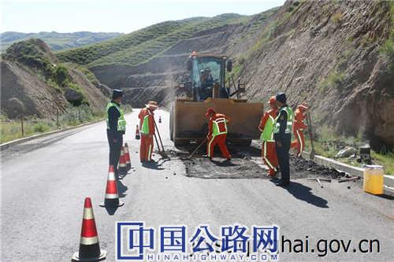

微官网
微官网
2020-09-03 青海省交通运输厅
公路病害不仅严重影响公路路容路貌，更危及公路行车安全，8月31日，湟源路政支队会同尕玛羊曲工区对国道572线公路路面病害进行整治。
该公路病害在国道572线K97＋500处，由于长下坡加之近期雨水较多，经过往车辆反复碾压后造成路面出现局部坑槽和细微横向裂缝，当日，路政执法人员与尕玛羊曲工区联动部门工作人员如期进入施工地点开始进行病害整治，由执法人员设置安全设施并指挥交通，养护部门人员快速对病害路段进行处置及修复，共同努力完成了对该路段路面的病害整治。
此次管养联动治病害双方行动迅速、耗时短，在不影响公路畅通的情况下完成了预期目标，充分体现了管养协调工作成效，此次行动共计重新铺设沥青混凝土路面4㎡，使用机械1台，出动人员9人，保证了辖区公路安全畅通。
